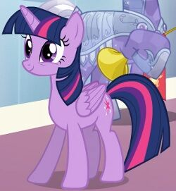
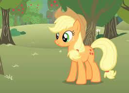
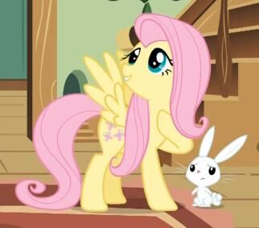
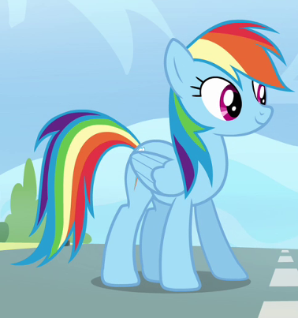

Hoofdpersonen
Dit zijn de hoofdpersonen van de serie "Vriendschap is magie.". Iedere pony heeft een cutie mark die hun
uniek maken, een cutie marks krijgt een pony als die zijn speciale talent vindt.
De hoofdepersonen vertegenwoordigen allemaal een element die belangrijk is voor vriendschap.
Twilight Sparkle
Twilight is samen met haar assisent Spike naar Ponyville verhuist om de magie van vriendschap te studeren. Ze is de belangrijkste hoofdpersoon in de serie.
- Soort: Een eenhoorn
- Cutie mark: Een ster met vijf kleine sterren. Het staat voor harmonie en toverkracht
- Vertegenwoordigd: Harmonie
Applejack
Woont in de Zoete Appelgaarden samen met haar familie. Applejack is loyaal en betrouwbaar, ze is altijd bereid om iemand in hood te helpen.
- Soort: Een aardpony
- Cutie mark: Drie appels. Haar cutie mark staat voor haar liefde voor appels.
- Vertegenwoordigd: Vriendelijkheid
Fluttershy
Fluttershy is meestal verlegen, rustig en vriendelijk. Ook houdt ze van dieren.
- Soort: Een pegasus
- Cutie mark: Drie roze vlinders, deze staan voor haar liefde van vlinders.
- Vertegenwoordigd: Eerlijkheid
Rainbow Dash
Rainbow Dash woont in Ponyville. Ze verantwoordelijk voor het weer opruimen, dit doet ze met behulp van haar vleugels.
- Soort: Een pegasus
- Cutie mark: Een witte wolk met een regenboog bliksemschicht
- Vertegenwoordigd: Loyaliteit
Pinkie Pie
Ze houdt van feestjes geven en is altijd vrolijk.
- Soort: Een aarde pony
- Cutie mark: drie ballonnen; één gele en twee blauwe
- Vertegenwoordigd: Vrolijkheid
Rarity
Rarity werkt als mode-ontwerpster en ze maakt de kleding voor haar eigen winkel, Carousel Boutique. Haar persoonlijkheid bestaat uit elegantie en vrijgevigheid.
- Soort: Een eenhoorn
- Cutie mark: drie blauwe diamanten
- Vertegenwoordigd: Vrijgevigheid
Spike
Spike is de assistent/vriend van Twilight Sparkle. Hij kan op magische wijze brieven sturen en ontvangen van Prinses Celestia. Ook is Spike verliefd op Rarity.
- Soort: Een draak
- Kenmerken: Hij is paars en heeft groene stekels langs zijn rug.